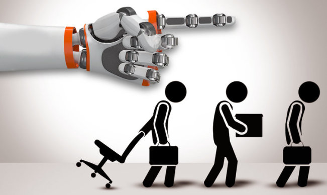

就像是蝴蝶从幼虫成长为成虫一样，每一次破茧都是为了变得更加强大，对于人类经济社会而言，割舍掉“无用阶层”要经历切肤之痛，但在这之后，经济会逐渐达到一个新的稳定状态，展现出来的就是一个更加强大美好的社会图景。
忧虑
早在1973年，电影《西部世界》就曾带领人们一同想象，一旦被人类所奴役的机器人逐渐脱离了人类的监视和控制，会带来什么样的腥风血雨，在此之后，1984年的《终结者》、2004年的《I，Robot》、2010年的《邪恶机器人》……这些影视作品无不告诫着人们，此刻眼前乖巧的人工智能一段或运行的程序是否正借助着人类的知识养料悄然生长，直至有一天掌握主动权，把人类从控制台上推下。
图1 《西部世界》里的人工智能
或许是忧虑人类族群对整个社会的掌控权对于本身就是被社会裹挟的普通大众而言过于杞人忧天，抑或是影视作品距离现实生活太过遥远，人类并没有将这些告诫放在心上，于是人工智能换了种方式向人类高调宣告自己的强大。它开始入侵人类曾引以为豪的领域——学习和创造。人工智能学会了“学习”，它们通过不断喂养进来的案例材料，逐渐能够模拟人类的思维过程和智能行为，它们能通过一次次检验反复调整自己的参数以达到最优，这样的学习让机器人赢得了那场众人瞩目的围棋赛；人工智能还学会了创造，AI作画、AI音乐——它们已经开始进入艺术创造领域，哪怕它们仍然只是“裁缝”一般缝合了喂养进来的学习材料。这已然提高了人们的警惕。
但这还不够，现在，人工智能凭借更高效率的生产、不知疲倦的劳动、精准无误的操作更加贪心地涉足人们赖以在社会上立足的基础——劳动，这下，它终于给人们带来了前所未有的危机感。
“无用”的出现
因为人工智能的介入，本就趋于饱和的劳动力市场变得更加僧多肉少、供不应求。在劳动力市场中，每一个人都是被物化的商品，即使站在金字塔顶端，仍然无法脱离市场上供求关系规律的束缚。
在世界各国经济都面临下行压力的当下，大量企业裁员、缩减生产规模甚至直接退出市场已是屡见不鲜，劳动力市场需求已经开始收缩；但与此同时，八十亿的庞大人口基数即使在十分之低的出生率水平之下，每年也依然能为这个世界带来数量可观的新生人口，更不必说如今正占领着或即将要占领劳动力市场的一代人是在人口基数庞大以及出生率高的组合下出生的一代人，在这样的情况下，除了自然孕育的劳动力，人造的劳动力——人工智能也以高“出生率”为劳动力供给注入大量新鲜的血液，机械化的生产流程、无人的车间成为评价企业生产能力的一大指标，机械的算法、智能的模型也成为决策的重要参考工具，生产过程种、各行各业中无处不见机器人。这些都指向一个不争的事实，供求的天平已然向供给一方倾斜。
更加令人感到威胁的是，除了挤占工作机会，某些职业例如一些工厂的装配作业的工作机会已经完全被人工智能收入囊中了，这导致原先在这些岗位上工作的人们无奈下岗，而这些被替代的工作往往是简单的、重复性的，暂时没被取代的是更高门槛、更高要求的工作，这是下岗劳工难以跨越的差距，因此，这些下岗劳工成为了经济上“无用”的商品，也被称为“无用阶层”。

图2 人工智能取代人类劳动力
“无用”之处境与未来
一部分原有工作岗位的消失往往伴随着新的工作岗位的出现。回顾历史，第二次工业革命时期，以内燃机和电力为代表的新的技术发明虽然导致一部分手工工人的工作被技术取代，但与此同时也创造了新的职位甚至新的产业，例如工程师、维修师、机械师等新职位以及汽车、飞机、家用电器等现代制造业，并且，家用电器的出现将大量全职主妇从家务劳动中解放出来，使她们能有机会投入到职场中；上世纪80年代自动化与计算机时代开启，由计算机控制的自动化机器代替人们进行大量重复性、常规性的工作，这导致了大量制造业岗位的消失，但与此同时，计算机程序员、机器人工程师等职业需求也随之产生。
而在人工智能的时代起点上，可以预见的，很多职业机会也即将变得只对机器人开放，现在的我们或许仍然无法想象，但我们也依然可以乐观地相信，随之而来的是新的、更多的职业选择。总而言之，从整个社会的层面来看，工作岗位的数量总体而言不会有太多的波动，至少不会存在断崖式的减少；可若我们从个人的层面来看、从一个“无用阶层”个体的视角来看，一个人的生命长度是有限的，学习一门新的技能是需要时间的，或许一个人哪怕用上一生都无法跟上学会新的专业技能、重新开始新的工作，就此永远被淹没在时代的潮流里。
图3 人工智能与人类共生
人类简单的工作技能，例如计算、简单的分析、重复的制造工艺，可以被人工智能轻松取得，但迄今为止支撑我们作为人类的骄傲的是人类永远无法被替代或目前在人类的认知中不可能被替代的功能，也就是价值认知上的创造功能。人类可以思考、可以想象，这是创新和创造的基础，是人工智能无法实现的功能，也是人类社会不断向前发展的重要动力。
如果把人类族群看作一个庞大的生物个体，思考、想象等思维能力就是人类大脑的功能，从事重要的创新性工作的人，例如生物科研工作者、高新技术研发者，担当的就是人类社会的大脑的功能，在主流舆论里即将被AI代替的会计、厂房里的工人等就像是人类社会的双手，辛勤地创造价值；而人工智能终究是人类的工具，只不过这个强大的工具有如锋利的剑刃，利刃有时也会划伤使用者的双手，但双手终究只是身体的一部分，不会造成致命的伤害。被破坏的皮肉也就是经济中被割舍掉的“无用阶层”，总有一天这部分会再长出来，直到下一次更加锋利危险的工具被创造出来，一次次涅槃重生，只是这被割舍的“无用阶层”每一次是不一样的人，或许下一次就是现在担当大脑的人，而到了那时候担当大脑的人群会是什么样的人群，我们无法想象，就如上世纪的人们无法想象会与人类对话的机器人的诞生。
图4 与人类对话的大语言模型
就像是蝴蝶从幼虫成长为成虫一样，每一次破茧都是为了变得更加强大，对于人类经济社会而言，割舍掉“无用阶层”要经历切肤之痛，但在这之后，经济会逐渐达到一个新的稳定状态，展现出来的就是一个更加强大美好的社会图景。
一个工作类型，甚至一个行业被机器人完全占领是需要时间的，同样的道理，一个新的工作岗位的出现也需要时间，这段时间便是难以忍受的阵痛期，没有人能够准确指出这段时期会持续多长，但我们总可以乐观且坚定地相信这段疼痛是可以熬过去的，就像过去的每一次一样。生产力的巨大飞跃会破坏生产力与生产关系之间的平衡，这是社会矛盾产生的根源，矛盾的产生会推动生产关系的变革，一般而言是经济形态或经济结构的改变，以此来匹配新的生产力水平，在这样的螺旋上升中，社会经济是向前发展的；在这样改善的大环境下，其中的人们，包括“无用阶层”，至少不会变得更差。
同时，不断收缩的人口规模也为劳动力市场的供求能够尽快达成新的平衡提供了助力。发达国家始终保持着接近于0甚至为负的生产率，而大型的发展中国家例如中国也慢慢呈现出人口规模收缩的趋势，这是经济发展下呈现出的一个普遍的趋势，在劳动力需求端呈现减少的趋势之下，劳动力供给端也呈现出增长放缓的趋势，供需缺口的扩大至少存在减缓的趋势，“无用阶层”的壮大也放缓了脚步，至少在这个层面上，这是积极的信号。
最后要补充的是，尤瓦尔·赫拉利在《未来简史》中提到，随着人工智能等先进科技的进步，只有1%的人会升级成超级人类，成为更高级的智人物种，而剩下那99%会沦为“无用阶层”，失去经济价值，最终导致低级智人被整个社会系统抛弃。
但少数人支撑不起一个强大的文化，因为文化是孕育于一个个个体之中的，人类文明要延续下去，终究是离不开无用但庞大的群体，这个群体是不应该被人类社会、被未来所抛弃的。
结语
人工智能就像是人类意识产出的孩子，孩子有时会反过来伤害母亲，无意或有意，母亲不会因此放弃孩子，但也不应该放任孩子伤害自己。人工智能的诞生是为了给人们带来更广阔的自由和更多的可能，而不是束缚人类的枷锁，如何与人工智能这个孩子沟通，让他顺着更好的方向成长，是更加重要的。
虽然从“无用阶层”个体的角度来讲，人工智能的浪潮带来的冲击是不容小觑的，但从人类族群总体来说，前景仍然是乐观的。社会的进步总会导致有人失去经济上的价值，但这何尝不是一种进化，推动着新时代的人们往更加优秀的方向衍化，不断提高人类族群的下限，这是属于新时代的人类进化论，理性地讲，这是更加优越的选择，一代代“无用阶层”的出现与挣扎，最终带动了整个人类族群基因的优化，此为无用之大用。